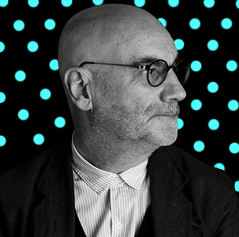
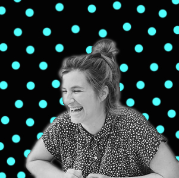
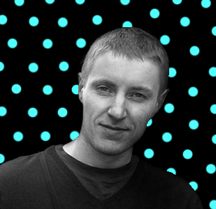

Home
Speakers
Adrian Shaughnessy:
Adrian Shaughnessy is a graphic designer, writer, educator and publisher based in London. In 1988 he co-founded the design company Intro. The company won numerous awards for its groundbreaking music packaging. In 2003 he left studio life to work as an independent design and editorial consultant. He is a founding partner in Unit Editions, a publishing company producing books on design and visual culture. Shaughnessy has written and art directed numerous books on design including How to be a Graphic Designer Without Losing Your Soul, which has sold over 80,000 copies to date. He has written and art directed books on Total Design, Ken Garland, and Herb Lubalin. His latest book is Scratching the Surface — a collection of essays and journalism on design.
Marta Veludo:
Marta Veludo is currently working in Amsterdam as a graphic designer and art director. Inspired by pop-culture, folk art, pound shops, and Tumblr and fascinated by inventions, color, movement, and compositions. She designs and conceptualizes both cultural and commercial fields. Whether in the digital realm or on a three-dimensional scale, she combines different disciplines and mediums to build engaging experiences.
David Airey:
Designer of enduring logos and visual identities, David Airey runs an independent graphic design studio in Northern Ireland, collaborating with clients worldwide to grow their businesses through distinctive, meaningful, and emotive design.
Schedule
- Adrian Shaughnessy: 10-10:30am
- Marta Veludo: 2:30-3pm
- David Airey: 3:15-3:45pm
- Destressing Design: 7:30-8:45pm
Tickets
- Standard: $40
- Advanced:$80
- VIP: $100